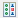
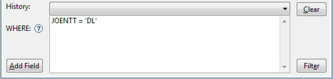
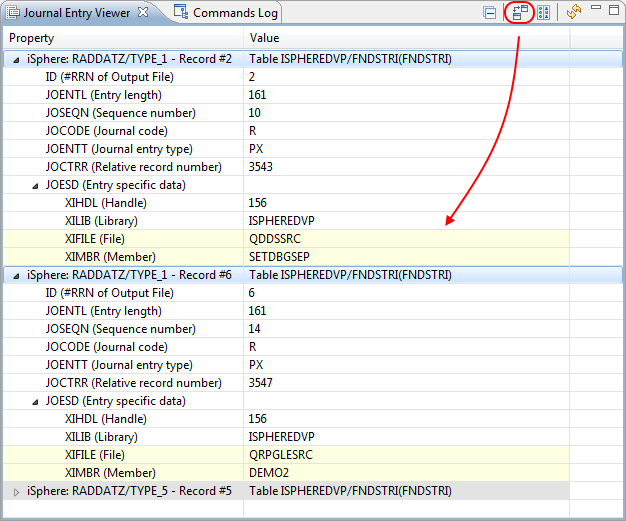

Example of creating a *TYPE1 or *TYPE2 output file:
Example of creating *TYPE3 or higher output file:
You can open the Journal Explorer perspective from 'Window -> Open Perspective -> Other...'. The perspective looks like that:
The columns can be colored on the preferences page of the Journal Explorer. By default the #RRN and the job and object related columns are color-coded.
The Journal Explorer view displays the journal entries of all open output files. Output files are opened in individual tabs. The properties of a selected journal entry are displayed in the Journal Entry Details view, which by default is at the right hand side of the Journal Explorer view.
The following actions are available:
| Opens an output file created by the DSPJRN command. | |
| Open an SQL editor for editing the SQL WHERE clause. | |
 | Export all journal entries to Excel. Use the context menu to export selected journal entries. |
|  | Compares the selected journal entries and shows the result side by side. |
| Highlights user-created journal entries. | |
 | Opens a dialog for configuring the parsers. |
 | Reloads the journal entries form the output file. |
The SQL Editor is used to enter a SQL WHERE condition for selecting a subset of the available journal entries. Enter the WHERE condition and then click the Execute button or press Ctrl+Enter to execute the query.

Use Ctrl+SPACE for content assistance.

The Journal Entry Details view displays the details of a journal entry, selected from the Journal Explorer or Journal Entry Viewer view.
The Journal Entry Viewer displays the selected journal entries of all open journal output files. It can be used as a workbench for analyzing journal entries.
The following actions are available:
 | Collapses the whole tree. |
 | Compares the selected journal entries. Properties that are different are highlighted. |
| Compares the selected journal entries and shows the result side by side. | |
| Re-parses the journal entries. |
Example of highlighted user-created journal entries:

Example of compared journal entries:

Example of a side-by-side compare: